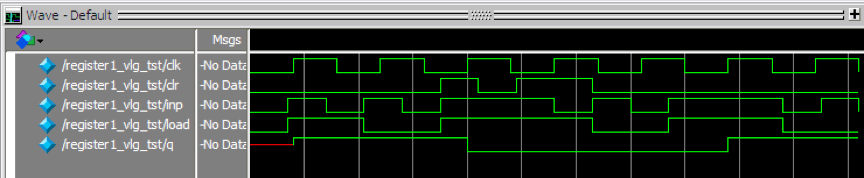
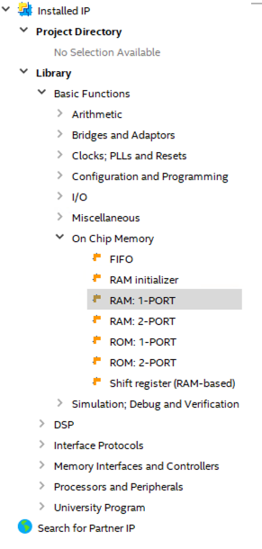
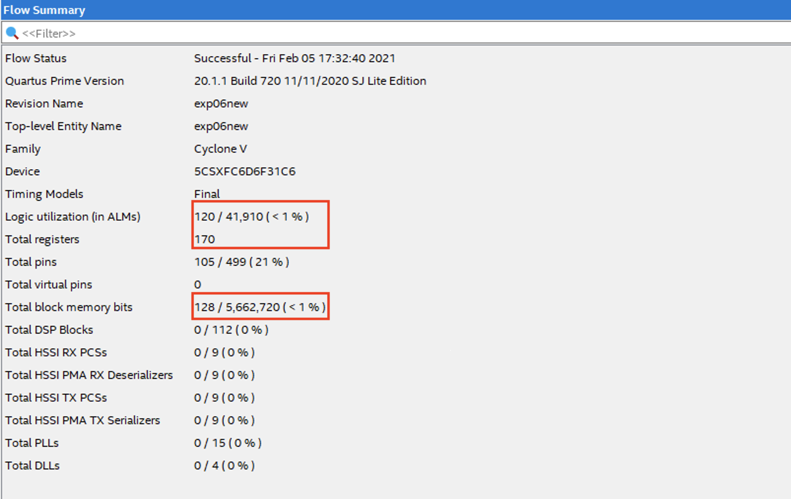

实验五 寄存器组及存储器
此情可待成追忆，只是当时已惘然。
— 《锦瑟》，李商隐
寄存器组（Register File）与存储器（Memory）是数字系统中的记忆器件，用来存放程序和数据。从程序员的角度来看，CPU的状态由其寄存器及存储器中的信息唯一确定。其中寄存器包括程序计数器PC、通用寄存器，存储器指主存。我们可以将计算机看成一个巨大的有限状态自动机，当这些存储部件的中的信息确定后，计算机的状态也确定了。在没有外部输入时，计算机后续的运行状态也是唯一确定的。
本实验的目的是了解FPGA的触发器及片上存储器的特性，分析存储器的工作时序和结构，并学习如何设计寄存器组和主存。
寄存器与寄存器组
FPGA上有大量的触发器资源来实现数据的存储。D触发器可以用于存储比特信号，给D触发器加上置数功能就变成了一位寄存器，如图 Fig. 29 所示。由图中可以看出，如果load信号为1，则输入信号in被送入或门中，或门的另一个输入端为0，此时D=in，所以在下一个时钟里q=in。当load值为0时，q值被反馈到或门中，或门的另一个输入值为0，此时D=q，因此在下一个时钟周期里q值保持先前的值不变。
Fig. 29 1位寄存器
用Verilog语言设计寄存器也很简单，如 Listing 17 所示。
module register1(load,clk,clr,inp,q);
input load,clr,clk,inp;
output reg q;
always @(posedge clk)
if (clr==1)
q <= 0;
else if (load == 1)
q <= inp;
endmodule
Listing 17 的程序的仿真图如图 Fig. 30 所示。
 Fig. 30 1位寄存器仿真结果
本例实现的是一个带有清0端和输入端的1位寄存器，还有的寄存器带有置位（置1）端的，图 Fig. 31 是同时带有清0端、输入端和置位端的寄存器的逻辑示意图，读者可自行设计此寄存器。
Fig. 31 1位寄存器框图
将2个或者2个以上的1位寄存器组合在一起，这些寄存器共用一个时钟信号，这就构成了多位寄存器，寄存器常被用在计算机中存储数据，如指令寄存器、数据寄存器等。表 Listing 18 是利用Verilog语言设计寄存器的例子。
module register4(load,clk,clr,d,q);
input load,clr,clk;
input [3:0] d;
output reg [3:0] q;
always @(posedge clk)
if (clr==1)
q <= 0;
else if (load == 1)
q <= d;
endmodule
Listing 18 的程序的仿真图如图 Fig. 32 所示。
Fig. 32 存储器结构
存储器是一组存储单元，用于在计算机中存储二进制的数据，如图 Fig. 33 所示。存储器的端口包括：输入端、输出端和控制端口。输入端口包括：读/写地址端口、数据输入端口等；输出端口一般指的是数据输出端口；控制端口包括时钟端和读/写控制端口。存储器的工作过程如下：
Fig. 33 存储器结构
写数据 ：在时钟（clk）有效沿（上升或下降沿），如果写使能（Wr_en，也可以没有使能端）有效，则读取输入总线（Data_in）上的数据，将其存储到输入地址线（In_addr）所指的存储单元中。
读数据 ：存储器的输出可以受时钟和使能端的控制，也可以不受时钟和使能端的控制。如果输出受时钟的控制，则在时钟有效沿，将输出地址所指示的单元中的数据，输出到输出总线上（Data_out）；如果不受时钟的控制，则只要输出地址有效，就立即将此地址所指的单元中的数据送到输出总线上。
注意存储器的读写时序
对于存储器，其读写时序非常重要，也是实践中容易出错的地方。读取数据时在哪个时间点数据有效，写入数据过多久可以读取，这些都要在设计时反复检查和验证。
FPGA存储器的工作模式有很多，如：真双口RAM、简单双口RAM、单口RAM、ROM或者FIFO缓存等。常见的模式请参照下表。
存储器模式 |
说明 |
|---|---|
单口存储器 |
某一时刻，只读或者只写 |
简单双口存储器模式 |
简单双口模式支持同时读写（一读一写） |
混合宽度的简单双口存储器模式 |
读写使用不同的数据宽度的简单双口模式 |
真双口储存器模式 |
真双口模式支持任何组合的双口操作：两个读口、两个写口和两个不同时钟频率下的一读口一写口 |
混合宽度的真双口存储器模式 |
读写使用不同的数据宽度的真双口模式 |
ROM |
工作于ROM模式，ROM中的内容已经初始化 |
FIFO缓冲器 |
可以实现单时钟或双时钟的FIFO |
在Verilog HDL中，可以用二维数组定义存储器。例如，假设需要一个32字节的8位存储器块，即此存储器共有32个存储单元，每个存储单元可以存储一个8位的二进制数。这样的存储器可以定义为 \(32 \times 8\) 的数组，在Verilog语言中可以作如下变量声明：
reg [7:0] memory_array [31:0];
存储单元为 memory_array [0] ~ memory_array [31]，每个存储单元都是8位的存储空间。
在读取时，可以用memory_array [13][3:0]直接读取第13号单元的低4位。
存储器的实现
Cyclone V 系列FPGA内部含有两种嵌入式存储器块：
10Kb的M10K存储器块——这是专用存储器资源块。M10K存储器块是理想的大存储器阵列，并提供大量独立端口。
64位存储器逻辑阵列（MLABs）——是一种嵌入式存储器阵列是由双用途逻辑阵列块配置而来的。MLAB是理想的宽而浅的存储阵列。MLAB是经过优化的可以用于实现数字信号处理（DSP）应用中的移位寄存器、宽浅FIFO缓存和滤波延迟线。每个MLAB都由10个自适应逻辑块（ALM）组成。在Cyclone V系列器件中，你可以将这些ALM可配置成10个 \(32 \times 2\) 模块，从而每个MLAB可以实现一个 \(32 \times 20\) 简单双端口SRAM模块。
Cyclone V系列FPGA嵌入式存储器资源如图 Fig. 34 所示，我们可以对应比较一下DE10-standard开发平台上配置的Cyclone V SX C6的存储器资源。
Fig. 34 Cyclone V系列的存储器资源
Quartus 会根据用户存储器设计的速度与大小，来自动选择硬件实现时使用的存储器模块的数量与配置。例如，为提供设计性能，Quarrus可能将可以由1块RAM实现的存储器设计扩展为由多块RAM来实现。
存储器的行为和FPGA的RAM模块
以下存储器综合时，综合器是否会用FPGA的RAM模块来实现这个模块？
module ram #(
parameter RAM_WIDTH = 32,
parameter RAM_ADDR_WIDTH = 10
)(
input clk,
input we,
input [RAM_WIDTH-1:0] din,
input [RAM_ADDR_WIDTH-1:0] inaddr,
input [RAM_ADDR_WIDTH-1:0] outaddr,
output [RAM_WIDTH-1:0] dout
);
reg [RAM_WIDTH-1:0] ram [(2**RAM_ADDR_WIDTH)-1:0];
always @(posedge clk)
if (we)
ram[inaddr] <= din;
assign dout = ram[outaddr];
endmodule
如果将表 Listing 19 中存储器实现部分改为
always @(posedge clk)
if (we)
ram[inaddr] <= din;
else
dout <= ram[outaddr];
该存储器的行为是否会发生变化？
分析三个输出端口的存储器实例
Listing 20 是一个存储器实例，实例中为此存储器设置了三个输出端口，请分析存储器结构和工作过程，查看此存储器的RTL图，检查存储器的输入输出和存储体的结构，并分析其三个输出端的结构的不同。为此实例设计一个测试代码，研究此三个端口输出数据时在时序上的差别，结合RTL图，给出其工作时序的解释。
module v_rams_8 (clk, we, inaddr, outaddr, din, dout0,dout1,dout2);
input clk;
input we;
input [2:0] inaddr;
input [2:0] outaddr;
input [7:0] din;
output reg [7:0] dout0,dout1,dout2;
reg [7:0] ram [7:0];
initial
begin
ram[7] = 8'hf0; ram[6] = 8'h23; ram[5] = 8'h20; ram[4] = 8'h50;
ram[3] = 8'h03; ram[2] = 8'h21; ram[1] = 8'h82; ram[0] = 8'h0D;
end
always @(posedge clk)
begin
if (we)
ram[inaddr] <= din;
else
dout0 <= ram[outaddr];
end
always @(negedge clk)
begin
if (!we)
dout1 <= ram[outaddr];
end
assign dout2 = ram[outaddr];
endmodule
其中initial语句块完成了在启动时对RAM的初始化。
适当选择输入输出端口宽度，将此实例进行引脚约束，利用开关或按钮作为时钟端，在开发板上再次验证其不同输入/输出方式的工作时序。
存储器的初始化
当需要初始化的RAM数据量较大的时候，可以使用文件来在系统启动时直接装入RAM数据。 Verilog提供了以下语句来将文件中的数据导入到RAM中：
initial
begin
$readmemh("D:/digital_logic/mem1.txt", ram, 0, 7);
end
以上内容可以替代前例中的RAM初始化部分，将mem1.txt中的数据导入到ram变量的第0单元至第7单元。请注意，这里mem1.txt可以存在任何不包含中文字符的目录下，但是在初始化语句中一定要给出此文件的绝对路径，否则仿真时将看不到初始化数据。
mem1.txt的内容和格式如下：
@0 0d
@1 82
@2 21
@3 03
@4 20
@5 ff
@6 50
@7 04
其中@符号后为ram地址，随后是16进制的ram数据。在verilog中，$readmemh方法读取16进制数据，$readmemb方法读取2进制数据。
初始化存储器时可以选择存储器的部分单元进行初始化，其他单元不初始化。如，假设存储器ram有8个存储单元，下面的初始化表示只对存储器的 \(0$\sim$5\) 号单元进行初始化，这也是可以的。
initial
begin
$readmemh("D:/digital_logic/mem1.txt", ram, 0, 5);
end
假设存储器ram有8个存储单元，下面的初始化试图对存储器的0~8号单元，共9个单元进行初始化，这是 不可以 的。
initial
begin
$readmemh("D:/digital_logic/mem1.txt", ram, 0, 8);
end
对存储器进行初始化还有其他方式，我们会在以后的实验中继续介绍。
使用IP核生成存储器
Quartus提供了很多非常实用的IP核，利用这些IP核可以很方便的实现复杂的设计。下面我们以设计一个存储器为例来介绍如何使用Quartus IP核。
通过IP生成RAM
在Quartus工作区的右边，就是IP目录，如下图所示
Fig. 35 IP目录
展开 Library 可以看见所有用的IP，继续展开 Basic Functions -> On Chip Memory , 双击 RAM：1-PORT ，即单口RAM。
 Fig. 36 选择RAM类型
弹出对话框，为此IP取一个名字，此处取名为 ram1port ，默认保存在当前工程目录下，IP核对应的硬件描述语言文件选择Verilog。
Fig. 37 选择目标文件名
选择存储器的大小：这里我们选择的是一个 \(16 \times 8\) bit 的存储器，由编译器自动选择实现存储器的方式是M10K还是MLAB。同时我们选择了一个时钟统一控制读写。
Fig. 38 选择RAM规模
对缓冲和使能信号等进行配置。注意我们这里没有对输出进行缓存。可以自行尝试增加输出缓存，实验RAM在有缓存时需要多少个时钟周期才能输出。
Fig. 39 信号缓存配置
对于单时钟RAM，选择如何解决“写时读”的数据冲突。如篇首《锦瑟》所言，本周期写入的数据，不一定能够在本周期读出。
Fig. 40 读写冲突解决
存储器初始化
在建立存储器的时候，可以选择不初始化，也可以利用一个十六进制文件.hex或者一个存储器初始化文件.mif进行初始化。在配置进行到图 Fig. 41 时可以选择利用文件初始化内存。 在此步骤中还可以配置内存动态更新，选择Allow In-System Memory Content Editor \(\ldots\) ，并给你的内存模块起一个合适的名字，如RAM1。
Fig. 41 初始化选择及动态内存更新选择
下面介绍一下.mif文件的生成。
回到Quartus工作区，点击 File -> New 在 Memory Files 目录下选择： Memory Initialization File ，点击 OK 。根据存储器大小选择进行设置：
Fig. 42 初始化文件大小选择
点击 OK 。
编译器自动跳出.mif文件初值设置界面，对其进行初值设置：
Fig. 43 编辑初始化文件
保存。
回到IP核生成对话框，点击 Browse ... .
Fig. 44 初始化文件选择
选择刚刚保存的.mif文件，点击 Open ，选择存储器初始化文件。点击 Next ， Next ， Finished ，完成整个单口RAM的配置。
在项目导航栏， Files 目录下，展开ram1port.qip，可以看见为此RAM生成的ram1port.v文件，双击打开，可以看见此ram1port.v的接口参数，在存储器设计的顶层实体中，对此RAM进行实例化，即可在设计中使用该RAM：
ram1port my_ram(
.address(addr),
.clock(clk),
.data(din),
.wren(we),
.q(dout0));
利用mif文件初始化非IP核存储器
编程中也可以使用mif文件来初始化存储器，如下语句即使用data.mif来初始化myrom。 这时要求该mif文件与.v文件在一个目录下。
(* ram_init_file = "data.mif" *) reg [7:0] myrom[255:0];
存储器动态更新
Quartus提供了In-System Memory Content Editor来实时观察和更新RAM中的内容。这对我们Debug是非常有用的。尤其是在CPU实验中，如果CPU设计没有改变，但是需要对系统中运行的汇编代码进行修改时，可以直接用In-System Memory Content Editor来改变，不需要重新编译整个工程。
在使用In-System Memory Content Editor之前，请先完整编译整个工程，并确保之前生成IP核时勾选了动态内存更新的功能。
在完成对开发版编程并运行后，打开Quartus的 Tools -> In-System Memory Content Editor 。进入如图 Fig. 45 所示界面。此时，需要首先选择硬件，连接开发板。然后会自动扫描JTAG，请选择第二个Device。这时左边应该出现了刚刚配置过的RAM1的标识，但是数据尚未更新。
Fig. 45 内存查看器配置
在RAM01上右击鼠标键，选择菜单中的 Read Data ... , 可以看到RAM中最新的数据。
Fig. 46 读取实时内存
如果需要改变RAM中的数据，可以直接手动在数据上修改，也可以右键选择Import Data from file，用新的mif文件来更新。在更新后请注意要右键选择Write data to In-System Memory，让更新生效。
实验内容
请在一个工程中完成如下的寄存器堆和RAM。寄存器堆和RAM的大小均为 \(16\times 8\) ，即都有16个存储单元，每个存储单元都是8位的，均可以进行读写。
实现寄存器堆
读取时不需要时钟控制，即读地址有效后，直接输出数据。写入时通过时钟上升沿进行控制。
此时可用以下方式输出：
assign out = ram[addr];
采用下面的方式进行初始化。
initial
begin
$readmemh("D:/digital_logic/mem1.txt", ram, 0, 15);
end
初始化数值为
@0 00
@1 01
@2 02
@3 03
@4 04
@5 05
@6 06
@7 07
@8 08
@9 09
@a 0a
@b 0b
@c 0c
@d 0d
@e 0e
@f 0f
实现RAM
利用IP核设计一个单口存储器，利用.mif文件进行初始化，十六个单元的初始化值分别为：0xf0, 0xf1, 0xf2, 0xf3, 0xf4, 0xf5, 0xf6,0xf7,0xf8, 0xf9, 0xfa, 0xfb, 0xfc, 0xfd, 0xfe, 0xff。 如果IP核不支持最小16单元的单口存储器，可以使用32单元或64单元的单口存储器替代，地址高位置零来只用16个RAM单元。
此两个物理上完全不同的存储器共用时钟、读写地址。适当选择时钟信号和写使能信号，以能够分别对此两个存储器进行读写。请将两个存储器读出的结果分别用2个七段数码管显示。请合理使用FPGA开发板的输入/输出资源，完成此寄存器堆和RAM的设计。由于开发板上输入数量不够，写入时可以只写入2位数据。
请使用In-System Memory Content Editor来修改RAM中的数据，验证你的修改确实更新到开发板上了。
请使用开发板上的按钮来做为存储器的时钟信号。观察两个不同的实现方式下各需要几个时钟周期来完成读取或写入操作？
打开
Tools -> Netlist Viewers -> Techonlogy Map Viewer，点开实现的树形结构寻找到你生成的两个存储器，观察综合后这两个存储器分别使用了什么方式来实现，为什么？注意观察综合后输出的资源消耗情况，图 Fig. 47 中两个红框部分消耗的资源可能是由哪个存储器产生的？如果用寄存器方式，我们用的开发板大约可以支持多大容量的存储？用Block Memory呢？
 Fig. 47 系统资源消耗
在线测试
寄存器堆实现
在线测试
前导零个数判断
寄存器与存储器的异同
虽然寄存器和存储器都是用来存储状态信息的，但是它们在用途和实现上有较大的区别：
寄存器一般要求存取速度快、并行访问要求高，所以通常寄存器的容量较小。在CPU中，PC及通用寄存器会经常被访问，因此存取的时延要求在一个时钟周期内。对于单周期CPU，每个时钟周期往往要求同时读取2个通用寄存器并完成1个寄存器的写回。在要求较高的时候，有可能寄存器组输出的结果需要异步输出，即不在时钟沿上读取，输出随着输入地址实时改变。在这样高的要求下，寄存器组的大小不可能太大，否则会消耗非常多的资源。
主存一般容量较大，但是读写时间较长，并且读写过程有严格的时序要求。
在Verilog中，虽然寄存器组和存储器的描述都是二维数组的方式。但是，编译和综合过程中会根据代码访问的要求来选择具体的实现方式。例如，当代码中没有严格在时钟信号沿上进行读写时，系统会认为该存储单元的读写要求较高，直接采用FPGA逻辑单元实现。这种实现方式消耗的资源巨大，一般只能支持数K量级的存储单元。如果要求大量的此类存储功能，系统可能会花很长时间进行编译综合，甚至无法实现。如果一个存储单元的访问严格按照时序要求，仅在时钟沿上进行每次单个单元的读写时，系统可以用大容量的M10K实现存储，一般可以支持到数百K字节的容量。因此，在实验中对存储器的读写应特别关注，避免用高级语言的二维数组的思路来看待存储器，否则会造成很多意想不到的后果。